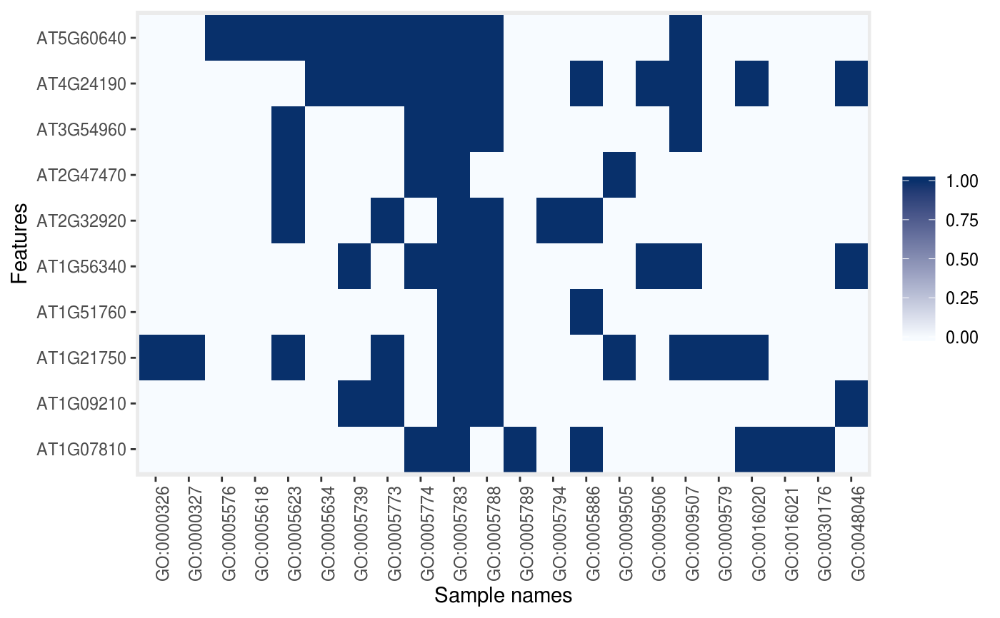

Creates a new "MSnSet" instance populated
with a GO term binary matrix based on an original object.
makeGoSet(object, params, namespace = "cellular_component", evidence = NULL)An instance of class "MSnSet"
or a character of feature names.
An instance of class "AnnotationParams",
compatible with featureNames(object)'s format.
The ontology name space. One or several of
"biological_process", "cellular_component" or
"molecular_function".
GO evidence filtering.
A new "MSnSet" with the GO terms
for the respective features in the original object.
library("pRolocdata")
data(dunkley2006)
data(dunkley2006params)
goset <- makeGoSet(dunkley2006[1:10, ],
dunkley2006params)
goset
#> MSnSet (storageMode: lockedEnvironment)
#> assayData: 10 features, 20 samples
#> element names: exprs
#> protocolData: none
#> phenoData: none
#> featureData
#> featureNames: AT1G09210 AT1G21750 ... AT1G07810 (10 total)
#> fvarLabels: assigned evidence ... markers (8 total)
#> fvarMetadata: labelDescription
#> experimentData: use 'experimentData(object)'
#> Annotation:
#> - - - Processing information - - -
#> Constructed GO set using cellular_component namespace [Sun Jun 16 09:18:07 2024]
#> MSnbase version: 2.31.1
exprs(goset)[1:10, 1:5]
#> GO:0005783 GO:0005788 GO:0005576 GO:0005739 GO:0099503
#> AT1G09210 1 1 1 1 1
#> AT1G21750 1 1 0 0 1
#> AT1G51760 1 1 0 0 0
#> AT1G56340 1 1 0 1 1
#> AT2G32920 1 1 0 0 0
#> AT2G47470 1 0 0 0 1
#> AT3G54960 1 1 0 0 1
#> AT4G24190 1 1 0 1 1
#> AT5G60640 1 1 1 1 1
#> AT1G07810 1 0 1 0 0
image(goset)
